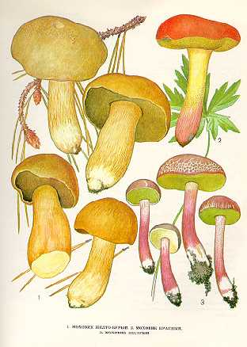

1. МОХОВИК ЖЕЛТО-БУРЫЙ.
Растет на песчаной почве в сосновых и смешанных лесах. Встречается часто, одиночно и группами в июле — октябре. Шляпка до 10 см в диаметре, мясистая, выпуклая, темно-желтая, или охристо-бурая, с буроватыми чешуйками. Мякоть желтоватая, на разрезе синеет, вкус и запах приятные.Трубчатый слой табачного цвета, трубочки коричневые, с очень мелкими округлыми порами. Споровый порошок охряно-оливковый. Споры удлиненно-эллипсоидные.
Ножка до 8 см длины, 1,5— 2,5 с м толщины, ровная, цилиндрическая, плотная, серовато-желтая, иногда с красноватым оттенком.
Гриб съедобен, третьей категории. Употребляется свежим и маринованным.
2. МОХОВИК КРАСНЫЙ
Растет в лиственных лесах и кустарниках, на старых, заброшенных дорогах, по обочинам канав в августе - сентябре. Встречается редко.
Шляпка до 9 см в диаметре, мясистая, подушковидная, розовато-пурпуровая, волокнистая.
Мякоть гриба желтая, на разрезе синеет.
Трубчатый слой у молодых грибов золотисто-желтый, у старых оливково-желтый, от
надавливания трубчатый слой синеет. Споровый порошок буроватый.
Ножка до 10 см длины, 0,5-1 см толщины, цилиндрическая, ровная, под шляпкой ярко-желтая, ниже бурая, красновато-розовая, с красными чешуйками.
Съедобен, четвертой категории. Употребляется вареным, сушеным, маринованным.
3. МОХОВИК ПЕСТРЫЙ.
Растет преимущественно в лиственных и смешанных лесах. Встречается часто, но не обильно в августе — октябре.
Шляпка до 10 см в диаметре, выпуклая, мясистая, сухая, войлочная, светло-бурая, коричневая, сетчато-растрескивающаяся. В местах повреждения красноватая. Мякоть желтовато-беловатая, рыхлая, на разрезе слабо синеет, затем краснеет, запах и вкус приятные. Трубчатый слой у молодых грибов бледно-желтый, у старых — зеленоватый. Трубочки приросшие к ножке. Поры широкие, угловатые. Споровый порошок желтовато-оливковый. Споры веретеновидные, гладкие.
Ножка до 9 см длины, 1—1,5 см толщины, цилиндрическая, ровная, иногда суженная книзу, плотная, светло-желтая или желто-бурая, иногда красноватая, при нажиме синеет.
Гриб съедобен, третьей категории. Употребляется свежим, маринованным, пригоден для сушки.